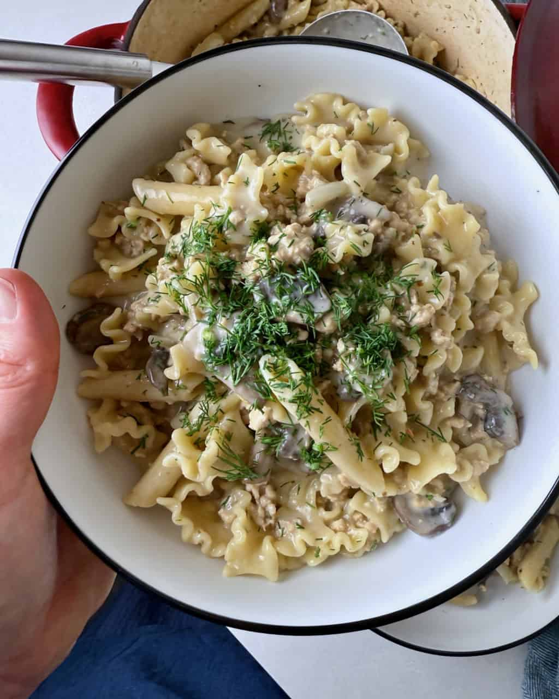

Beef Stroganoff
Home

Description
One-Pot Creamy Stroganoff dish ready in 30 minutes.
Easy to make and can substitute beef for chicken, turkey, or mushrooms.
Ingredients
- Butter
- Oil
- Ground beef (or can substitute for chicken or turkey).
- Onion
- Garlic
- Mushrooms
- Mustard
- Worcestershire sauce
- Beef stock cube
- Egg noodles
- Sour cream
- Salt, black pepper
- Water
- Mustard
Steps
- Heat the butter and oil in a Dutch oven. Add the ground meat,
break it up, and allow it to brown as best as possible.
- Meanwhile, dice the onions and add them to the pot along with
the salt, pepper, and garlic.
- Slice the mushrooms and add them to the pot. Allow the mushrooms,
onions, and meat to cook for 4-5 minutes or until the onions and
mushrooms soften.
- Crumble in the stock cube, add the mustard, Worcestershire sauce,
and boiling water, and stir well to combine.
- Add the noodles and stir everything together. Crank up the heat
to max until the water comes to a boil, then reduce the heat to
medium-low, cover with a lid, and allow to cook, stirring
occasionally, according to the package instructions on the pasta.
- Once the pasta is done, the mixture should still be quite watery,
but the pasta will have absorbed a lot of the liquid. Remove the
pot from the heat, stir in the sour cream, and allow the pasta to
sit, covered, for 5 minutes.
- Meanwhile, chop the herbs (parsley or dill). After the stroganoff
has rested for 5 minutes, stir in the fresh herbs and serve.